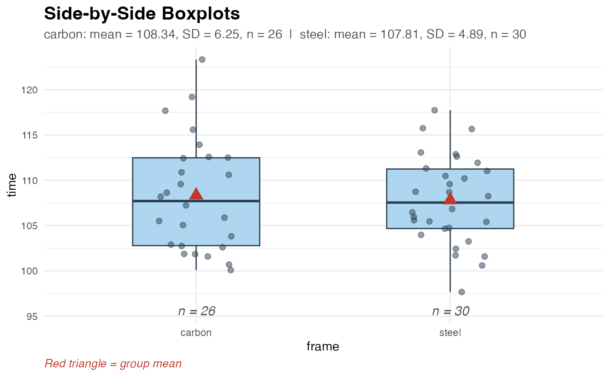
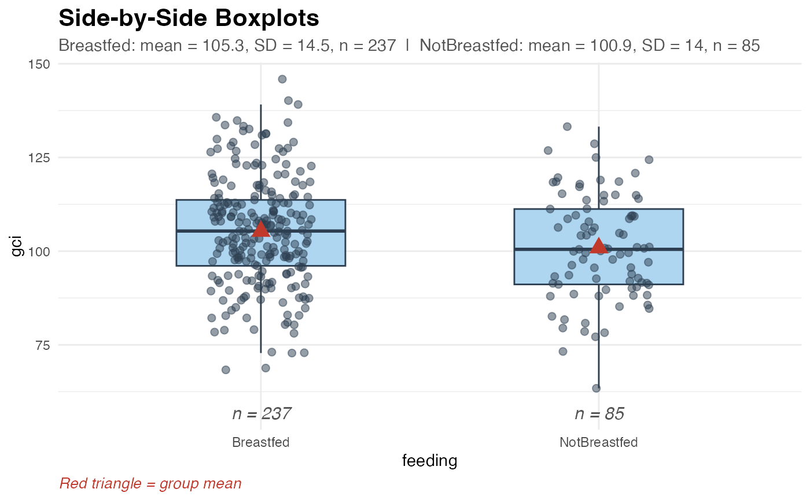
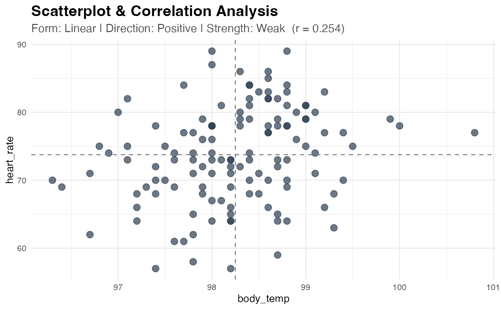
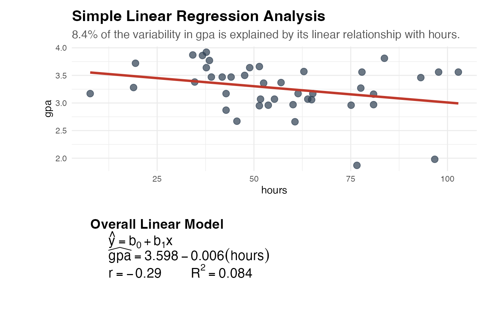

Produces an appropriate visualization and summary statistics for the relationship between two variables. The function automatically detects variable types and routes to the correct display mode:
Both numeric – Scatterplot with crosshairs and correlation annotation (correlation mode), or a regression line with equation panel (regression mode). An optional
groupargument produces separate colored points and lines per group.Numeric response, categorical explanatory – Side-by-side boxplots with individual points overlaid, group means marked, and group sample sizes annotated. Use this before running
test_2mean()orci_2mean().
This function accepts input via formula and data only.
Arguments
- formula
A two-sided formula of the form
response ~ explanatory. The response variable (y) is placed on the vertical axis and the explanatory variable (x) on the horizontal axis. Both quantitative and categorical explanatory variables are supported. For example:formula = gpa ~ hours(both numeric – scatterplot)formula = time ~ frame(numeric ~ categorical – boxplot)
- data
A data frame containing the variables named in
formulaand, optionally, the variable named ingroup.- group
An optional character string naming a categorical column in
datato use for grouping. Only applies when both variables are numeric. When supplied, separate colored points, crosshairs (correlation mode), or regression lines (regression mode) are drawn for each group level. For example,group = "Sex"ifdatahas a column calledSex. Default isNULL(no grouping).- fit_line
Logical. Only applies when both variables are numeric. Controls which display mode is used:
FALSE(default) Correlation Mode – draws crosshairs at the sample means and annotates the correlation coefficient. Use this first to assess the form, direction, and strength of the association before running
test_correlation().TRUERegression Mode – overlays the least-squares regression line and displays the fitted equation and \(R^2\) in a second panel. Use this before running
test_regression().
When the explanatory variable is categorical,
fit_lineis ignored and a boxplot is always produced.
Value
A ggplot2 object (correlation or boxplot mode) or a
patchwork object combining the scatterplot and equation panel
(regression mode). The result can be further customized with
standard ggplot2 functions if needed.
Details
When to Use This Function
Always explore your data visually before running a formal inference
procedure. explore_2vars() is designed to be the natural first step:
Before
test_2mean()orci_2mean(): useexplore_2vars(formula = response ~ group, data = mydata)to see side-by-side boxplots of the two groups.Before
test_correlation(): useexplore_2vars(formula = y ~ x, data = mydata)to check for a linear relationship.Before
test_regression(): useexplore_2vars(formula = y ~ x, data = mydata, fit_line = TRUE)to see the regression line and equation.
Boxplot Mode (Numeric Response ~ Categorical Explanatory)
When the explanatory variable is categorical, the function produces:
Side-by-side boxplots for each group
Individual data points overlaid (jittered to avoid overlap)
A red triangle marking the group mean
Group sample sizes annotated below each box
A subtitle summarizing the mean and SD for each group
Examples
# --- Boxplot Mode: numeric response, categorical explanatory ---
# Do carbon and steel bike frames produce different ride times?
explore_2vars(
formula = time ~ frame,
data = biketimes
)

# Do breastfed children have higher GCI scores?
explore_2vars(
formula = gci ~ feeding,
data = breastfeedintell
)

# --- Correlation Mode: both numeric ---
# Is there a linear association between body temp and heart rate?
explore_2vars(
formula = heart_rate ~ body_temp,
data = tempheart
)

# --- Regression Mode: both numeric ---
# How well does study time predict GPA?
explore_2vars(
formula = gpa ~ hours,
data = gpa,
fit_line = TRUE
)
#> `geom_smooth()` using formula = 'y ~ x'

# --- Regression Mode with Grouping ---
if (FALSE) { # \dontrun{
mtcars$engine_type <- ifelse(mtcars$vs == 0, "V-Shaped", "Straight")
explore_2vars(
formula = mpg ~ wt,
data = mtcars,
group = "engine_type",
fit_line = TRUE
)
} # }